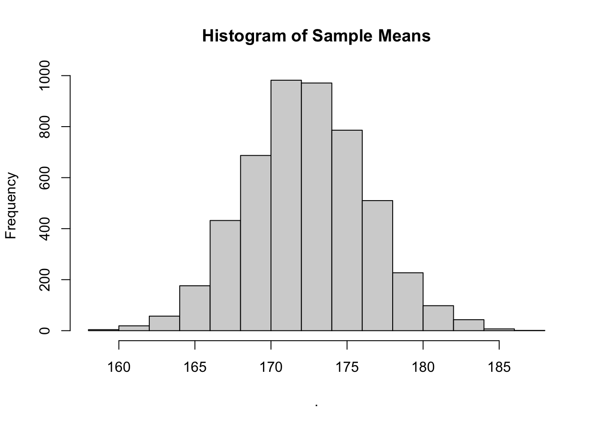

Chapter 5 Samples
The following CRAN packages must be installed:
| Required CRAN Packages |
|---|
| tidyverse |
| remotes |
The following GitHub packages must be installed:
| Required GitHub Packages |
|---|
| dstanley4/learnSampling |
A GitHub package can be installed using the code below:
5.1 Overview
Researchers are usually interested in describing the attributes of a population; numbers that describe the population are called parameters. Two parameters that are frequently of interest are the mean and variance of the population. Unfortunately, it’s rarely possible to obtain information from every member of a population to calculate a parameter. Consequently, researchers use subsets of the population called samples to estimate parameters. Numbers calculated from sample data are called statistics. Typically, sample statistics are used to estimate population parameters.
Sample statistics, however, often differ from population parameters. The difference between a sample statistic and the population parameter occurs because the sample data is random subset of the population data — with correspondingly fewer observations. Sometimes the sample statistic will be higher than the population parameter; other times the sample statistic will be lower than the population parameter. Because random sampling is used to select the sample data the direction and magnitude of the difference between the sample statistic the population parameter will vary randomly.
Further complicating matters is the fact that the formula used for a sample statistic may, or may not, be the same as the formula used for the corresponding population parameter. This occurs because the purpose of the sample statistic is typically not to describe the sample. Rather the purpose of the sample statistic is to estimate the population parameter. Depending on the parameter, you may or may not be able to use the same formula with sample data as you would with population data.
5.2 Data for the chapter
We begin by activating the required packages:
Next, we create a large population with 100,000 people using the get_height_population() command:
The glimpse() command can be used to confirm that the population contains 100,000 people.
## Rows: 100,000
## Columns: 3
## $ id <int> 1, 2, 3, 4, 5, 6, 7, 8, 9, 10, 11, 12, 13,…
## $ sex <chr> "male", "female", "female", "male", "male"…
## $ height <dbl> 177, 150, 171, 157, 169, 187, 163, 173, 17…We can use the head() command to see the first 10 rows of the 100,00 rows. We see that each row in pop_data represents a single person.
## # A tibble: 10 x 3
## id sex height
## <int> <chr> <dbl>
## 1 1 male 177
## 2 2 female 150
## 3 3 female 171
## 4 4 male 157
## 5 5 male 169
## 6 6 male 187
## 7 7 female 163
## 8 8 male 173
## 9 9 female 172
## 10 10 male 1935.3 Notation
In the formulas below, when we refer the population, we use uppercase letters to indicate members (\(X\)) or the size (\(N\)). In contrast, when we refer to the sample, we use lowercase letters to indicate members (\(x\)) or the size (\(n\)). Make sure you notice the similarities between population and sample formulas even when the notation differs.
5.4 Estimating the mean
We are interested in the sample mean (\(\bar{x}\)) to the extent that it provides an estimate of the population mean (\(\mu\)). The population mean is calculated using Formula (5.1):
\[\begin{equation} \mu = \frac{\sum{X}}{N} \tag{5.1} \end{equation}\]
We can calculate the population mean for the height column of pop_data using the summarise() and mean() commands. The mean() command uses Formula (5.1). We see in the output that the population mean is 172.48 (\(\mu = 172.48\)).
## pop_mean
## 1 172.5As noted previously, we rarely have access to data from an entire population. Consequently, we use the sample mean as an estimate of the population mean. The sample mean, \(\bar{x}\), is a statistic calculated using the using Formula (5.2) below. The bar of above the \(x\), indicates that it is a mean. Notice that Formula (5.1) and Formula (5.2) are the same - even though they use different notation.
\[\begin{equation} \bar{x} = \frac{\sum{x}}{n} \tag{5.2} \end{equation}\]
Because a sample mean (a statistic) is calculated using a random subset of the population it is likely to differ from the population mean (a parameter). If you, inaccurately, believe that you can learn something meaningful from a single study, this fact may be disconcerting. Statisticians know, however, that rarely can you learn anything from a single study, or even a small set of studies. Consequently, they are more interested in what is true, on average, over a large number of studies. Therefore, we simulate drawing a large number of samples from a population with the code below.
many_samples <- get_M_samples(pop.data = pop_data,
pop.column.name = height,
n = 10,
number.of.samples = 5000)We use the head() command to see the first 10 rows (i.e., 10 samples of 5000 samples):
## study n sample.mean sample.var.n sample.var.n_1
## 1 1 10 174.3 27.81 30.90
## 2 2 10 161.8 83.36 92.62
## 3 3 10 173.2 139.16 154.62
## 4 4 10 180.0 321.80 357.56
## 5 5 10 172.8 160.96 178.84
## 6 6 10 172.0 159.60 177.33
## 7 7 10 166.5 86.45 96.06
## 8 8 10 173.5 139.45 154.94
## 9 9 10 177.7 167.01 185.57
## 10 10 10 168.5 262.65 291.83Each row of many_samples represents a sample of 10 people. Each column of many_samples indicates a sample statistic. You can see that for each sample/row we indicate “n” (the sample size) and “sample.mean” (the mean of the population), and a few other statistics. Even though all the samples came from the same population you can see how the values in the sample.mean column vary across samples/rows. You can see the full extent to which the sample means vary by creating a graph with the code below. In this code, we use the pull() command to extract the value from the sample.mean column and then we send them to the base R hisogram command, hist().

You can see the 5000 sample means, from the sample.mean column, plotted in this graph. Recall the population mean for heights is \(\mu = 172.48\) cm. Notice that most of the sample means cluster around this value. Also notice there is considerable variability about this value. Any given sample mean (\(\bar{x}\)) may differ substantially from the population mean (\(\mu = 172.48\)). This variability illustrates the challenges with learning something from a single study - particularly a study with a small sample size. Many of the sample means fall quite far from the population mean.
Statisticians, recognizing the limitations of a single study, are not particularly concerned if a single sample mean deviates from the population mean. That said, statisticians are very concerned as to whether or not the results of a large number of studies are correct – on average. That is, does the average of many sample means correspond to the population mean. If, on average, the sample mean is accurate we refer to it as an unbiased estimator.
In the code below we calculate the average of the 5000 sample means to determine if the sample mean is an unbiased estimator.
## mean_of_sample.mean
## 1 172.4We find that the average of the 5000 sample means is 172.41 which is very close to the population mean of 172.48. Note that when we did this, we used the same formula to calculate the sample mean (Formula (5.2)) as we did the population mean (Formula (5.1)), although the notations differed. The average of the sample means was not identical to the population mean but it was very close - it would have been exactly the same with many more samples. Consequently, the sample mean provides an unbiased estimate of the population mean. In other words, it makes sense to use the sample mean as an estimate of the population mean. If we try to estimate the population mean with a sample mean we will, on average, be correct; although any given sample/study mean might be “wrong”.
5.5 Estimating variance
We are interested in the sample variance (\(s^2\)) to the extent that it provides an estimate of the population variance (\(\sigma^2\)). We begin by reviewing population variance. The population variance is calculated using Formula (5.3):
\[\begin{equation} \sigma^2 = \frac{\sum{(X - \mu)^2}}{N} \tag{5.3} \end{equation}\]
We can calculate the population variance for the height column of pop_data using the summarise() and var.pop() commands. The var.pop() command uses Formula (5.3). We see in the output that the population variance is 157.5 (\(\sigma^2 = 157.5\)).
## pop_var
## 1 157.5Because we rarely have access to data for an entire population we typically want to estimate the population variance using sample data. However, estimating the population parameter from a statistic, is more complicated for variance than it was for the mean. Initially, we might be tempted to use the formula below for sample variance, in which we divide by \(n\). This formula is the same as the population variance formula, Formula (5.3), but adapted to use sample-level notation.
\[ \begin{aligned} s^2 = \frac{\sum{(x - \bar{x})^2}}{n} \end{aligned} \]
The formula for sample variance with an \(n\) in the denominator is, unfortunately, a biased estimator of population variance. That is, estimates of the population variance are systematically too low when you use a sample variance formula with an \(n\) in the denominator. We can see that this is true by examining the many_samples data. In these data, the column sample.var.n contains the variance for the sample calculated with the above formula. Below we use code to obtain the average of the sample.var.n column over the 5000 samples. If this average equals the population variance of 157.5 then variance, using \(n\) in the denominator, is an unbiased estimator of the population variance.
## mean_of_var.n
## 1 141.1You can see the average of sample.var.n column (141.86) is much smaller than the population variance (157.5). That is, the average of the sample variances, using \(n\) in the denominator, was smaller than the population variance. Consequently, sample variance, using \(n\) in the denominator, provides a biased estimate of the population variance. If we try to estimate the population variance with sample variance, using \(n\) in the denominator, we will, on average, be wrong.
Fortunately, there is a sample-level formula that estimates the population variance without bias (see Hayes). An unbiased estimate of the population variance can be obtained if we calculate the sample variance but divide by \(n - 1\) instead of \(n\). The unbiased estimate is calculated using Formula (5.4).
\[\begin{equation} s^2 = \frac{\sum{(x - \bar{x})^2}}{n-1} \tag{5.4} \end{equation}\]
In the many_samples data, the column sample.var.n_1 was generated using Formula (5.4). We can evaluate the quality of Formula (5.4), using \(n-1\), by averaging over values in the sample.var.n_1 column.
## mean_of_var.n_1
## 1 156.7We see that the average of the 5000 values using \(n-1\) in the denominator is 157.62 which is very close to the population varaince of 157.46. Consequently, we when we use \(n-1\) in the denominator we have an unbiased estimate of the population variance. If we try to estimate the population variance with a sample variance, using \(n-1\) in the denominator, we will, on average, be right.
You may wonder at this point, when we use \(n-1\) in the denominator of the sample variance, can we still think of it as the average of the squared deviations from the mean. The short answer is yes. When you use \(n-1\) in the denominator of the sample variance you are not calculating the variance for the group people in the sample. Rather, you are estimating the variance for the much larger group of people in the population. Consequently, it makes sense to think of sample variance, using \(n-1\), as an estimate of the average of the squared errors in the population. That is, it makes sense to think of sample variance, using \(n-1\), as an estimate of the average of the squared differences between each person in the population and the population mean.
5.6 Estimating standard deviation
The population standard deviation is calculated using Formula (5.5) below.
\[\begin{equation} \sigma = \sqrt{\frac{\sum{(X- \mu)^2}}{N}} \tag{5.5} \end{equation}\]
Due to the above findings for variance, we estimate the population standard deviation using Formula (5.6) below.
\[\begin{equation} s = \sqrt{\frac{\sum{(x - \bar{x})^2}}{n-1}} \tag{5.6} \end{equation}\]
5.7 Estimating SMD
We are interested in the sample standardized mean difference (\(d\)) to the extent that it provides an estimate of the population standardized mean difference (\(\delta\)). The population standardized mean difference is calculated using Formula (5.7):
\[\begin{equation} \delta = \frac{\mu_{1} - \mu_{2}}{\sigma} \tag{5.7} \end{equation}\]
We can calculate the population standardized mean difference for men and women once we have the respective population means and standard deviations. Recall the initial data mixed males and females. We begin by creating separate data sets for males and females:
male_population_heights <- pop_data %>%
filter(sex == "male")
female_population_heights <- pop_data %>%
filter(sex == "female") Next, we calculate the mean and standard deviation of each population:
## # A tibble: 1 x 2
## mean sd
## <dbl> <dbl>
## 1 180. 10.1## # A tibble: 1 x 2
## mean sd
## <dbl> <dbl>
## 1 165. 10.1This reveals the population parameters are:
\[ \begin{aligned} \mu_{female} &= 165 \\ \mu_{male} &= 180 \\ \sigma = \sigma_{female} = \sigma_{male} &= 10.1\\ \end{aligned} \]
Likewise, the population-level standardized mean difference (\(\delta\)) is 1.49. We can see this population-level difference illustrated in Figure 5.1.
\[ \begin{aligned} \delta &= \frac{\mu_{male} - \mu_{female}}{\sigma} \\ &= \frac{180 - 165}{10.1} \\ &= \frac{15}{10.1} \\ &= 1.49 \\ \end{aligned} \]

FIGURE 5.1: Illustration of the standardized mean difference of 1.49 for height between males and females. The solid black vertical lines indicates the means (\(\mu\)) for the two populations.
We typically need to estimate the population-level standardized mean difference from sample data because we rarely have access to data for an entire population. Many researchers estimate the population standardized mean difference from sample data using the Formula (5.8) below. This value is known by many other names: \(d\), Cohen’s \(d\), and Hedges \(g\). Notice that the sample-level formula, Formula (5.8), below, is the same as the population-level formula, Formula (5.7), above, only the notation differs.
\[\begin{equation} d = \frac{\bar{x}_{1} - \bar{x}_{2}}{s_{pooled}} \tag{5.8} \end{equation}\]
Unfortunately, Formula (5.8) provides a biased estimate of the population standardized mean difference for small sample sizes. That is, on average, Formula (5.8), provides \(d\)-values that overestimate the size of the population standardize mean difference (\(\delta\)). Fortunately, we can obtain an unbiased estimate of the population-level standardized mean difference from sample data using Formula (5.9).
\[\begin{equation} d_{unbiased} = \frac{\bar{x}_{1} - \bar{x}_{2}}{s_{pooled}} \times [1 - \frac{3}{4(n_1 + n_2)-9}] \tag{5.9} \end{equation}\]
If we try to apply either \(d\)-value formula ((5.8) or (5.9)) to real data we quickly encounter a problem. We don’t have the pooled standard deviation, \(s_{pooled}\)
5.7.1 Pooled standard deviation
When we calculated the population-level standardized mean difference, there was only one standard deviation (i.e., only one variance). More specifically, the male and female populations both had a standard deviation but it was the same for both populations. The population-level formula for the standardized mean difference, Formula (5.7), has only one standard deviation in it. This is because calculation of the standardized mean difference explicitly depends on the fact the both population have the same standard deviation.
Let’s consider hypothetical sample data to make the situation clear. More specifically, we will examine the sample-level statistics below for males and females. Notice that we have two standard deviations – one for males and one for females. Moreover, these two sample-level standard deviation (using \(n\)-1) are not the same - they are different from each other. This initially seems problematic - calculation of standardized mean difference requires that population standard deviaitons are identical. Fortunately, this is sample-level data and not population-level data.
\[ \begin{aligned} \bar{x}_{males} &= 187.2 \\ s_{males}^2 &= 92.2 \\ s_{males} &= 9.6 \\ \end{aligned} \]
And females:
\[ \begin{aligned} \bar{x}_{females} &= 160.1 \\ s_{females}^2 &= 66.8 \\ s_{females} &= 8.2 \\ \end{aligned} \]
We need to recognize that the sample-level standard deviations are likely to differ from the population-level standard deviation due to sampling error. Consequently, we are likely to get two different sample-level standard deviations even if the population-level standard deviations are identical for males and females.
How do we resolve this situation of having two sample-level standard deviations? The first step is to switch to thinking in terms of variance rather than standard deviation. Due to the way the math works, life becomes very complicated, very quickly, if we continue to think in terms of standard deviations. Therefore, we reframe the problem into a variance problem. Variances are preferable to standard deviations because we can add and subtract variances - but not standard deviations.
We have a sample variance for males (92.2) and a sample variance for females (66.8). We view each of these sample variances as an estimate of the respective population variances (see Figure 5.2). That is, the male sample variance is an estimate of the male population variance. Likewise, the female sample variance is an estimate of the female population variance. However, we also assume that the population variances for males and females are the same. Consequently, the male sample variance and the female sample variance are both estimates of a single population variance (see Figure 5.3). Because the two sample variances are estimates of the same population variance, we can (when the sample sizes are equal) calculate a new variance by averaging them together. This new variance, the average of the sample variances, provides us with a better estimate of the single population variance. The logic behind this approach is similar to averaging two measurements of the same distance to reduce error. We call this new variance pooled variance; and represent it with the symbol \(s_{pooled}^2\).

FIGURE 5.2: Estimating population variances with sample variances. The male sample variance (n-1) is an estimate of male population variance. Likewise, the female sample variance (n-1) is an estimate of the female population variance.

FIGURE 5.3: Two estimates of a single population variance. We assume the population variances are the same. Therefore, the male and female sample variances are both estimates of the same population variance.
FIGURE 5.4: Pooled variance estimates population variance. We create a single estimate of the population variance called pooled variance (\(s_{pooled}^2\)). When sample sizes are equal, the pooled variance is just the average of the two sample variances (both using n-1). When the sample sizes are unequal (i.e., different numbers of males and females), we need to use a more sophisticated formula to obtain the pooled variance.
When the sample sizes for males and females are the same (i.e., \(n_{males} =n_{females}\)) we can use the Formula (5.10) below to calculate the pooled variance.
\[\begin{equation} s_{pooled}^2 = \frac{s_{1}^2 + s_{2}^2}{2} \tag{5.10} \end{equation}\]
When the sample sizes for males and females are the different (i.e., \(n_{males} \ne n_{females}\)) we can use the Formula (5.11) below to calculate the pooled variance. This formula can be used all of the time. We only show Formula (5.10), above, to make it clear that Formula (5.11) below is basically just averaging the variances in a way that takes sample size into account.
\[\begin{equation} s_{pooled}^2 = \frac{(n_1 -1)s_1^2 + (n_2 -1)s_2^2}{n_1 + n_2-2} \tag{5.11} \end{equation}\]
We get the single standard deviation we need, \(s_{pooled}\), by taking the square root of the variance, \(s_{pooled}^2\).
\[ \begin{aligned} s_{pooled} &= \sqrt{s_{pooled}^2} \\ \end{aligned} \]
If we apply the pooled standard variance, Formula (5.11), to the sample data:
\[ \begin{aligned} s_{pooled}^2 &= \frac{(n_{male} -1)s_{male}^2 + (n_{female} -1)s_{female}^2}{n_{male} + n_{female}-2} \\ &= \frac{(10 -1)92.2 + (10 -1)66.8}{10 + 10 -2} \\ &= 79.5 \end{aligned} \]
And then we obtain the pooled standard deviation we need, below, for the standardized mean difference formula.
\[ \begin{aligned} s_{pooled} &= \sqrt{79.5} \\ &= 8.9\\ \end{aligned} \]
5.7.2 Calculating \(d\)
Now that we the pooled standard deviation, \(s_{pooled}\), we can calculated the standardized mean difference. We do so below using unbiased formula, Formula (5.9).
\[ \begin{aligned} d_{unbiased} &= d \times [1 - \frac{3}{4(n_{males} + n_{females})-9}] \\ &= \frac{\bar{x}_{males} - \bar{x}_{females}}{s_{pooled}} \times [1 - \frac{3}{4(n_{males} + n_{females})-9}] \\ &= \frac{187.2 - 160.1}{8.9} \times [1 - \frac{3}{4(10 + 10)-9}] \\ &= 3.0 \times 0.96\\ &= 2.9\\ \end{aligned} \]
5.7.3 Assessing bias
We can use our population-level data and sample from it to see the range of sample-level d-values that can occur.
First, we remove the scores from the male and female columns and place them into male_heights and female_heights, respectively.
male_heights <- male_population_heights %>%
pull(height)
female_heights <- female_population_heights %>%
pull(height)Next we obtain a large number of samples from each population and place them in many_samples.
many_samples<- get_d_samples_from_population_data(pop1 = male_heights,
pop2 = female_heights,
cell.n = 10,
number.of.samples = 5000)We can example the contents of many_samples using the head() command. Each row of many_samples illustrates two samples: 10 males and 10 females. For both males and females we calculate the mean and variance. As well, we calcualte the \(d\) and \(d_{unbiased}\) for each row. If you examine the first row carefully you see that the data in this row corresponds to the hand calculation example.
## study group.n m1 m2 v1 v2 s2.1 s2.2 d
## 1 1 10 187.2 160.1 92.18 66.77 80.4 58.9 3.04
## 2 2 10 183.0 166.0 107.33 77.78 80.4 58.9 1.77
## 3 3 10 181.0 168.8 39.78 144.18 80.4 58.9 1.27
## 4 4 10 175.4 162.5 80.27 89.39 80.4 58.9 1.40
## 5 5 10 184.1 163.6 90.99 28.93 80.4 58.9 2.65
## 6 6 10 181.8 165.6 96.40 106.27 80.4 58.9 1.61
## 7 7 10 176.6 167.0 97.16 161.56 80.4 58.9 0.84
## 8 8 10 188.0 160.8 211.56 204.62 80.4 58.9 1.89
## 9 9 10 185.3 165.8 54.68 91.51 80.4 58.9 2.28
## 10 10 10 179.3 161.9 69.34 55.43 80.4 58.9 2.20
## d.unbiased
## 1 2.91
## 2 1.69
## 3 1.22
## 4 1.34
## 5 2.54
## 6 1.54
## 7 0.81
## 8 1.81
## 9 2.18
## 10 2.11Recall the population level standardized mean difference, \(\delta\), was 1.49. We can see the extent to which the average the \(d\) and \(d_{unbiased}\) compare to this population-level values.
## mean_d mean_d_unbiased
## 1 1.564 1.498You can see the mean of the \(d\) values is 1.56 which is higher than the population-level standardize mean difference (\(\delta\)). In contrast, you can see the mean of the \(d_{unbiased}\) values is 1.498 which closely corresponds to the population-level standardize mean difference (\(\delta\)) - it would have exactly corresponded with more samples.
5.7.4 Illustrating variability
An inspection of the first few rows of the the of many_samples data above illustrated that many of the \(d_{unbiased}\) values differed from the population-level standardized mean difference of \(\delta = 1.49\). We can see the variability in sample-level \(d_{unbiased}\) values in the histogram below.

FIGURE 5.5: Histogram of \(d_{unbiased}\) when \(\delta = 1.49\)
We can calculate the full range of sample-level \(d_{unbiased}\) values with the commands below:
## d_min d_max
## 1 -0.16 5.15We see from the output that \(d_{unbiased}\) values were as small as -.20 and as large as 5.2. All of these values are estimates of the population level standardized mean difference of \(\delta = 1.49\). You can see that many of the sample-level estimates differed considerably from the population-level value. Indeed,
5.8 Overview
In this chapter we have illustrated how a number of population parameter can be estimated by sample statistics. These are summarised below.
| Parameter | Estimated by this statistic | |
|---|---|---|
| Mean | \(\mu = \frac{\sum{X}}{N}\) | \(\bar{x} = \frac{\sum{x}}{n}\) |
| Variance | \(\sigma^2 = \frac{\sum{(X - \mu)^2}}{N}\) | \(s^2 = \frac{\sum{(x - \bar{x})^2}}{n-1}\) |
| \(s_{pooled}^2 = \frac{(n_1 -1)s_1^2 + (n_2 -1)s_2^2}{n_1 + n_2-2}\) | ||
| Standard deviation | \(\sigma = \sqrt{\frac{\sum{(X - \mu)^2}}{N}}\) | \(s =\sqrt{\frac{\sum{(x - \bar{x})^2}}{n-1}}\) |
| \(s_{pooled} = \sqrt{\frac{(n_1 -1)s_1^2 + (n_2 -1)s_2^2}{n_1 + n_2-2}}\) | ||
| Cohen’s \(d\) or SMD | \(\delta= \frac{\mu_{1} - \mu_{2}}{\sigma}\) | \(d = \frac{\bar{x}_{1} - \bar{x}_{2}}{s_{pooled}}\) |
| \(d_{unbiased} = \frac{\bar{x}_{1} - \bar{x}_{2}}{s_{pooled}} \times [1 - \frac{3}{4(n_1 + n_2)-9}]\) |
5.9 Meta-analysis
It may seem odd that we used so many simulations to investigate the properties of statistics. Surely, researchers don’t do that “in the real world”. In fact, researchers that are aware of the enormous impact of sampling error know single studies have little informational value. They recognize that any single study has a high probability of being misleading. Consequently, these individuals survey the literature and find all the studies on a single topic (possibly thousands of studies). An average of the results of all of the thousands of studies can then be calculated and reported. This process is refered to as conducting a meta-analysis; and it perfectly corresponds to the process we used in the simulations. A meta-analysis finds “the truth” of what is happening at the population level by averaging over all of the studies on that topic.
5.10 Key Points
Sample are of interest because the help use estimate attribute of the population
Sample statistics estimate population parameters
Due to the fact that sample statistics are based on a random subset of the population (i.e., a sample) they often differ substantially from the population parameter. This illustrates that informational value of a single study is typically quite low.
A statistic is unbiased if the average of the sample statistics, over many thousand of samples, equals the population parameter.
To avoid bias, sometimes the formula for a sample statistics differs from the formula for the population parameter
We used simulations to but they were like a meta-analysis.